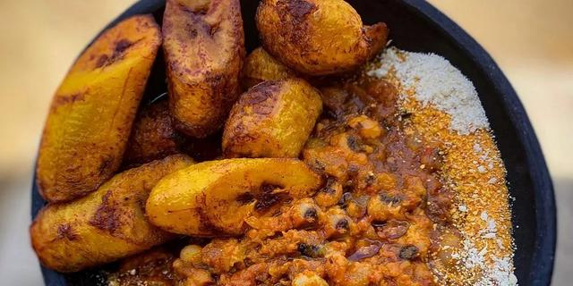

Gobe

Description
Cooked beans with gari and palm oil usually ate with fried plaintain.
Ingredients
Beans
Palm oil
Gari
Plantain
Steps
Boil beans until it becomes soft
Fry plaintain with the palm oil
Serve beans with gari and a little palm oil.